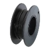

Actuator Assembly¶
This guide is essential for ensuring the actuators function reliably and integrate seamlessly into the display system. It provides detailed instructions for assembling the 30 actuators used in the Kinetic Display. Below are the key areas:
- Components and Tools: Lists all required components (e.g., motors, wires, connectors) and tools (e.g., soldering station, wire strippers, crimping tool).
- Shaft Gear Installation: Explains how to securely attach the shaft gear to the motor shaft using super glue and precise alignment.
- Wire Preparation: Details cutting, stripping, and soldering wires to motor terminals, ensuring proper polarity for clockwise and counterclockwise motion.
- Dupont Connectors: Guides the crimping and housing of Dupont connectors for easy connection to the digit PCB.
- Motor Mount Assembly: Covers assembling the motor mount, pinion gear, and shaft, ensuring smooth operation without jamming or sticking.
There are 30 actuators in the display, 7 per digit and 2 for the colons (4 digits x 7 segments + 2 colons = 30 total actuators). The diagrams below identify the various parts and composition of the actuator.
Fully assembled actuator with segment and back stopper.

Actuator rack and pinion gear assembly.

The actuator assembly includes installing the shaft gear onto the DC brushed motor, preparing and adding the wires to the motor, assembling the motor mount, pinion gear and shaft, then adding the DC brushed motor to the assembled motor mount.
Prerequisites¶
Table of components
| Quantity | Component | Image |
|---|---|---|
| 30 | 130 Strong Magnetic Toy Motor |  |
| 150 cm | 28 AWG Stranded Wire (white) |  |
| 150 cm | 28 AWG Stranded Wire (black) |  |
| 60 | DuPont 2.54mm Pitch Female Connector Pin | |
| 30 | DuPont 2.54mm Pitch Terminal Connector Single Row Housing 2 Pin | |
| 10 | Jumbo Metal Paperclip (smooth) |  |
Table of tools
| Required | Tool | Image |
|---|---|---|
| Yes | Soldering station |  |
| Yes | 0.8mm 1.76oz RoHS flux core solder |  |
| Yes | Large regular tipped screwdriver | |
| Yes | Super glue | |
| Yes | 22-34 AWG Wire Stripper and Cutter |  |
| Yes | Pin Crimp Tool for 2.54mm Dupont Connectors | |
| Yes | Heavy Duty Wire Cutter Pliers |  |
| Yes | Heavy Duty Cross Locking or Clamping Tweezers | |
| Yes | 10cm zinc strip |  |
| No | Label Maker |  |
Shaft Gear¶
In this section you'll glue the shaft gear onto the shaft to avoid slippage. The shaft gear must be made from rigid filament like PLA or ABS.
Shaft Gear Installation Steps¶
The tools and parts needed to install the shaft gear include: a regular tipped screwdriver, super glue, motor shaft 10-toothed gear, and DC brushed toy motor.
- Add a drop of super glue to attach the shaft gear. Note the shaft gear is 10mm high and the hole is 5mm.
- Position the DC toy motor vertically so the bottom of the DC motor shaft sits on a hard surface. Use the regular tipped screwdriver to press the 10-toothed gear onto the shaft. Be sure to push the 10-toothed gear 5mm down into the shaft.

- Repeat the steps in this section for the remaining 29 motors.

Wires¶
After the actuator is assembled, it will be connected to the digit PCB. The white 28 AWG wire provides the clockwise (CW) motion that extends the segment, the black wire provides the counter clockwise (CCW) motion that retracts the segment.
Wire Cutting and Soldering Steps¶
In this section you'll create 21 unlabelled motors with 4 centimeter wires with Dupont connectors, 4 motors labelled "C", 4 motors labelled "D", and one labelled "UC" (upper colon), totalling 9 motors having 6 centimeter wires with dupont connectors. The tools and parts needed to prepare and add the wires to the DC motor includes: black and white 28 AWG stranded wire, wire strippers for 28 AWG wire, and a soldering station with 0.8mm 1.76g flux core solder.
- Cut 9 white and 9 black wires of 6 centimeter lengths for segment actuators C and D and the upper colon. Cut 21 white and 21 black wires of 4 centimeter lengths for the remaining actuators.

- Strip about 3mm off one end of each black and white wire.

- Position the DC motor so the shaft is pointed away and the terminals are facing up. Set your soldering iron to 350°C then add solder to each motor terminal.

- With the DC motor shaft pointing up and the terminals are facing up, solder the white wire onto the left motor terminal and the black wire onto the right motor terminal.

Note
There are 9 motors with 6 centimeter wire lengths: four motors labelled C, four D, and one UC (upper colon). Place a label on the black-wire side of the motor.
Dupont Connections¶
The tools and parts needed to add the 2.54mm Dupont connectors to each wire include: the DC motor with shaft gear and wires (as prepared in the previous steps), a Dupont connector crimping tool, 60 female Dupont pin connectors and 30 1x2p Dupont connector housings.
- Strip 3mm off the end of the DC motor wire.

- Crimp the female connectors onto each wire.
- Slide the Dupont connector housing onto the wires so the pins lock into the housing.

- Repeat the previous steps for all remaining motors. Be sure to place your label on the black-wire side of the motor for the 6 centimeter wire length actuators with C (4), D (4) and one UC (upper colon). No need to label the 21 other actuators with 4 centimeter lengths

Motor Mount¶
In this section you'll assemble the motor mounts. Properly installed parts on the motor mount are essential to making the actuators work without issues such as having a segment stick or jam in an extended or retracted position. The figure below summarizes the assembly for the motor mount. There are three parts: the (A) motor mount, the (B) pinion reduction gear, and (C) pinion gear shaft. Discard the red support section.
 The tools and parts needed to assemble the motor mount include: 3d printed motor mount in PLA and Nylon pinion reduction gear, a 20mm metal shaft made from a jumbo paper clip, a soldering station capable of a heat setting of 250° C, clamping tweezers with a thin piece of metal.
The tools and parts needed to assemble the motor mount include: 3d printed motor mount in PLA and Nylon pinion reduction gear, a 20mm metal shaft made from a jumbo paper clip, a soldering station capable of a heat setting of 250° C, clamping tweezers with a thin piece of metal.
- Cut the off the straight sections from the Jumbo paper clip.

- Measure 2 cm from each Jumbo paper clip straight section.
- Use a large wire cutter to cut the shaft.
- Insert the 2 cm shaft through the motor mount until it protrudes about 1mm into the pinion gear space.

- Add the pinion gear to the motor mount as shown in the diagram. Insert the shaft by aligning the pinion gear shaft hole with the metal shaft, then slide the metal shaft all the way into the motor mount.

- Heat your soldering iron to 250°C and prepare your clamping tweezer and zinc strip as shown in the picture.
- Hold the zinc strip over the shaft collar and press down on the zinc strip with your soldering iron. Melt the collar and flatten it onto the motor mount.

- When finished, the melted collar will only protrude about a half millimeter out from the motor mount.
Note
Verify the shaft can slide through the pinion gear before assembling the motor. If you cannot rotate the pinion gear on the shaft, then you'll need to reprint the pinion gear to ensure the hole is wide enough. Avoid an overly sized shaft hole as it allows the gear to shift side to side on the motor shaft and will cause the actuator to jam or stick. 
- Hold the main body of the motor mount so the pinion gear faces left. Avoid touching or putting any pressure onto the motor mounting tabs used the screw the motor onto the display. With your other hand, hold the prepared motor with the shaft pointed left and the terminals downward, insert the prepared motor into the motor mount.
- Repeat the process for the remaining 29 motors.